Zombiehölle damals
Ein Arma 2 DayZ Server und eine Community mit gemeinsamen Geschichten. Entdecke die Timeline, alte Bilder und Erinnerungen im Archiv.
Geschichte entdeckenErinnerungen aus über 10 Jahren Zombiehölle und der Einstieg in das neue 2D-Survival-Projekt.
Ein Arma 2 DayZ Server und eine Community mit gemeinsamen Geschichten. Entdecke die Timeline, alte Bilder und Erinnerungen im Archiv.
Geschichte entdecken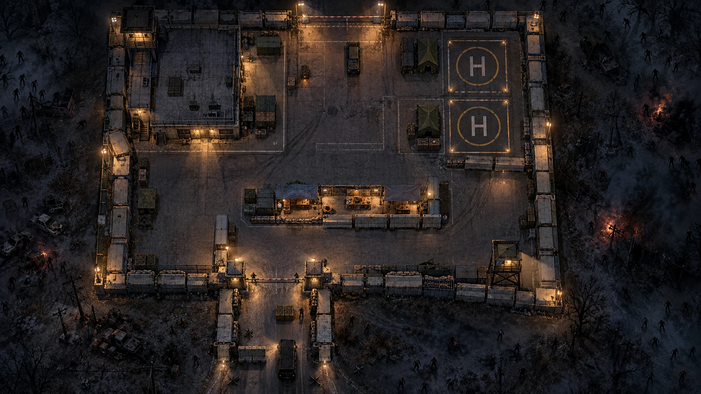
Ein eigenständiges 2D-Multiplayer-Survival-Spiel in Entwicklung. Eine neue Welt, modulare Gebäude und gemeinsamer Basenbau bilden das nächste Kapitel.
Nächster öffentlicher Testlauf: 24. Oktober Zum SpielAktuell in Entwicklung: Welt, Grafik und Basenbau werden überarbeitet. Alle Details, die Abstimmung und den vollständigen Changelog findest du auf der Gamepage.
Entwicklung ansehenNächster Testlauf ab 24.10.
Im Jahr 2013 entstand Zombiehölle als kleiner ARMA 2 DayZ-Server. Was zunächst als Treffpunkt einiger weniger Spieler begann, entwickelte sich über die Jahre zu einer Community, die weit über einen gewöhnlichen Gameserver hinausging.
Von DayZ über Epoch bis hin zu ARMA 3 und Exile – jedes Projekt brachte neue Spieler, neue Geschichten und unzählige Erinnerungen hervor.
Heute existieren diese Server nicht mehr. Doch ihre Geschichte bleibt erhalten. Diese Webseite ist das digitale Archiv einer Community, die seit über zehn Jahren besteht.
ARMA 2 DayZ · Chernarus · 2013
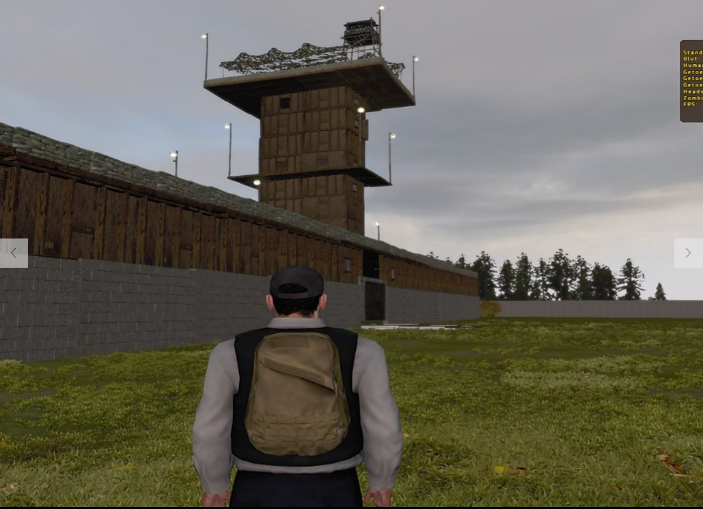
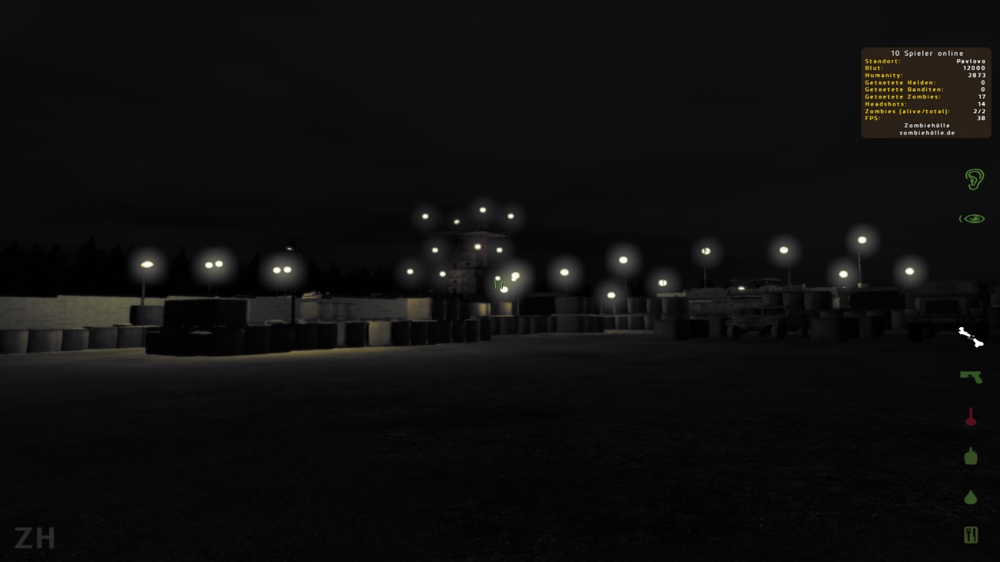
Die Adminbase war das Herzstück des DayZ-Servers. Hier haben wir Stein auf Stein gebaut, Events vorbereitet oder einfach nur nächtelang die Basis gebaut, abgehangen und gequatscht.
Seit 2013 haben viele Spieler, Helfer, Freunde und Wegbegleiter die Zombiehölle (ZHServer) mitgeprägt.
Danke für eure Zeit, eure Ideen und all die gemeinsamen Momente.
SEIT 2013 · ZOMBIEHÖLLE (ZHSERVER)
ARMA 2 DAYZ · Zombiehölle
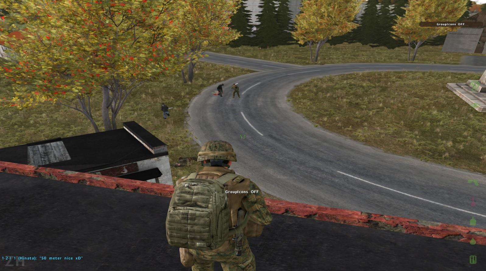
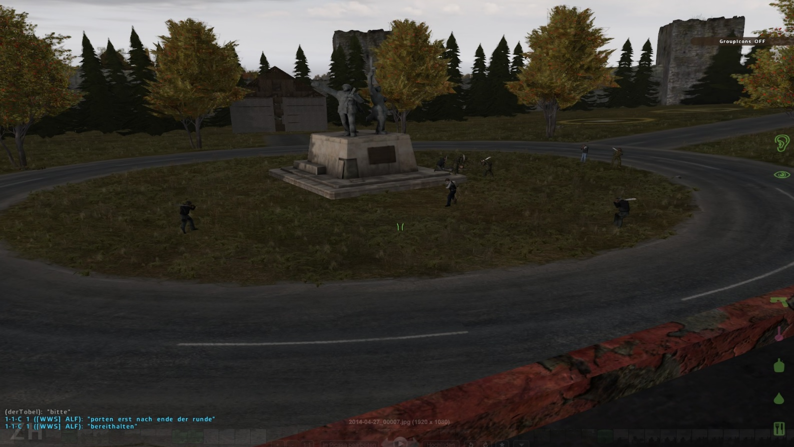
Manche Events brauchten keine komplizierten Regeln. Beim Axt-Event bekam jeder Spieler die gleiche Ausrüstung: eine einzige Axt.
Keine Schusswaffen, keine Fahrzeuge, keine Vorteile. Nur Können, Taktik und der Wille, als letzter Spieler übrig zu bleiben.
ARMA 2 DAYZ · Zombiehölle
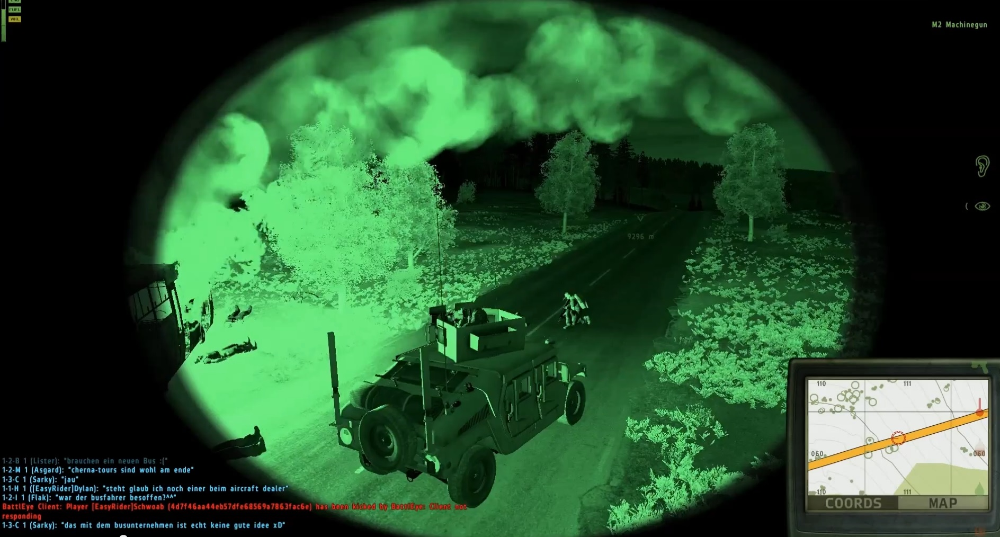
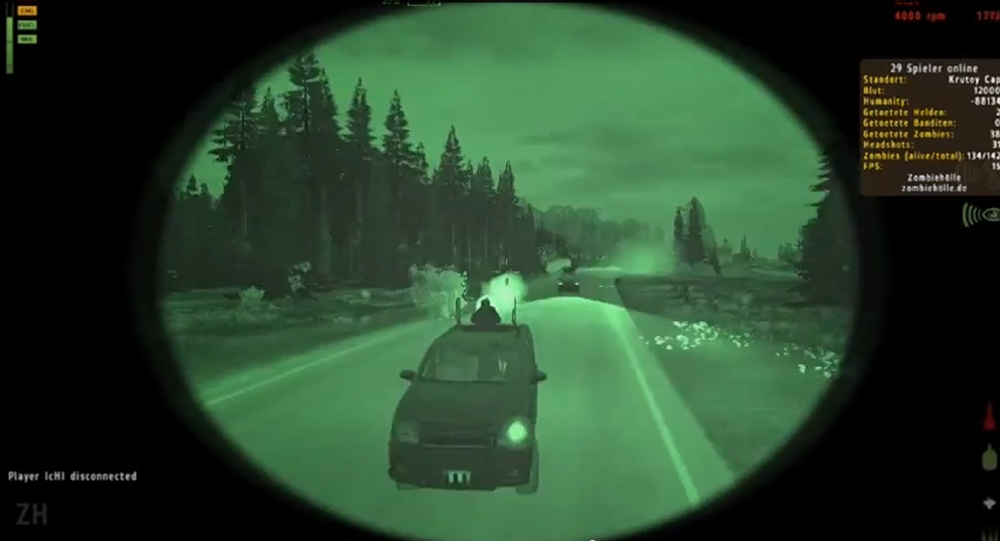
Beim Convoy-Event waren mehrere Spieler gemeinsam mit Fahrzeugen unterwegs. Planung und Zusammenarbeit standen dabei im Mittelpunkt.
▶ Video ansehenARMA 2 DAYZ · Zombiehölle
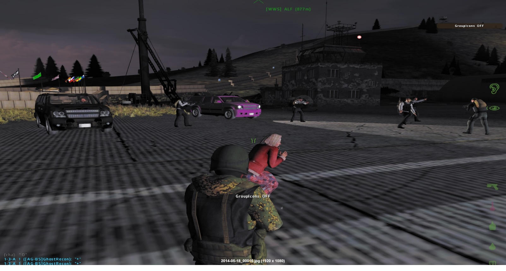
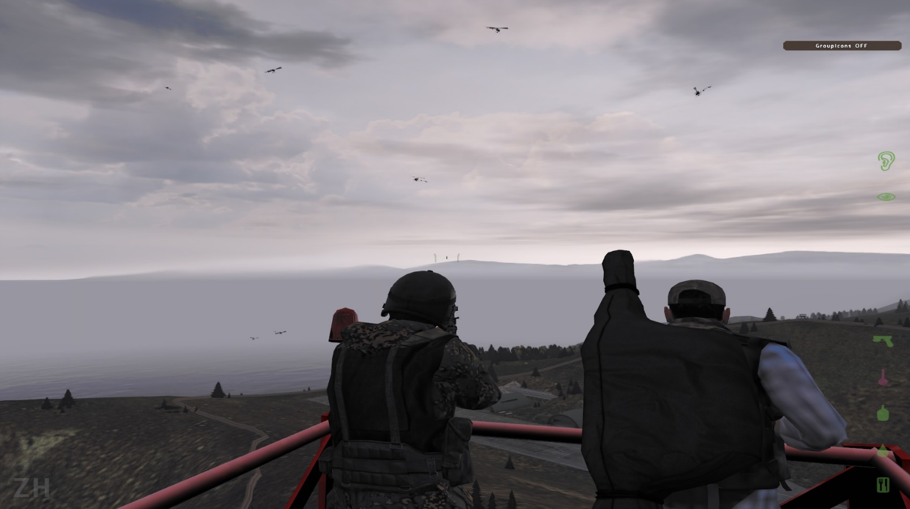
Mehrere Hubschrauber gleichzeitig in der Luft mit nur einem Ziel: die anderen abzudrängen/abzuschiesen und als Letzter zu überleben.
ARMA 2 DAYZ · Zombiehölle
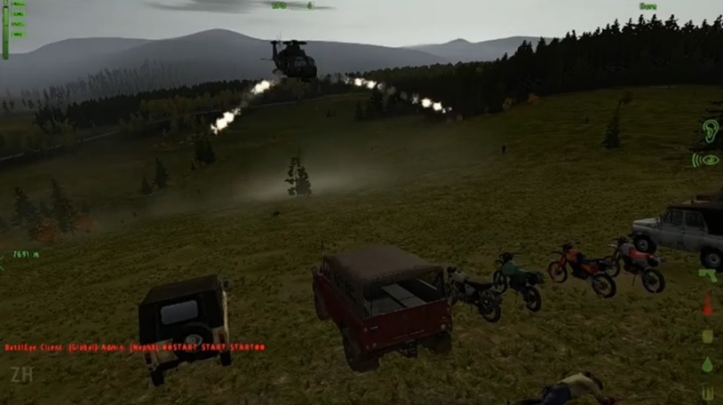
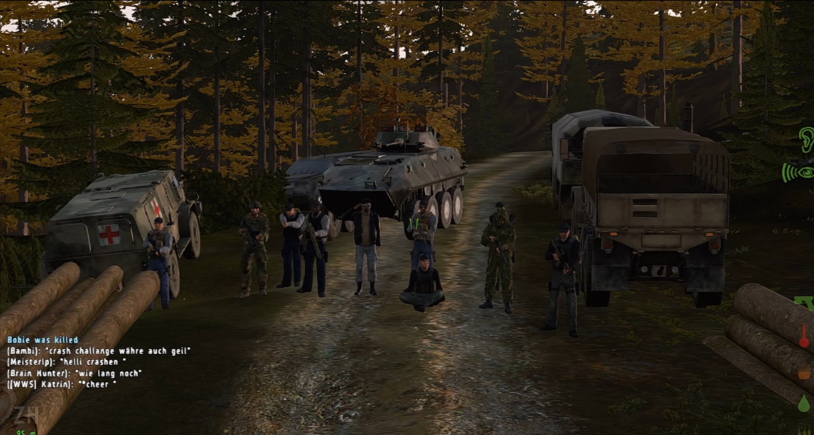
Die Spieler mussten eine vorgegebene Strecke durch Chernarus abfahren. Dafür wurden eigene Hindernisse und Herausforderungen vorbereitet, die es zu bewältigen galt.
ARMA 2 DAYZ · Zombiehölle
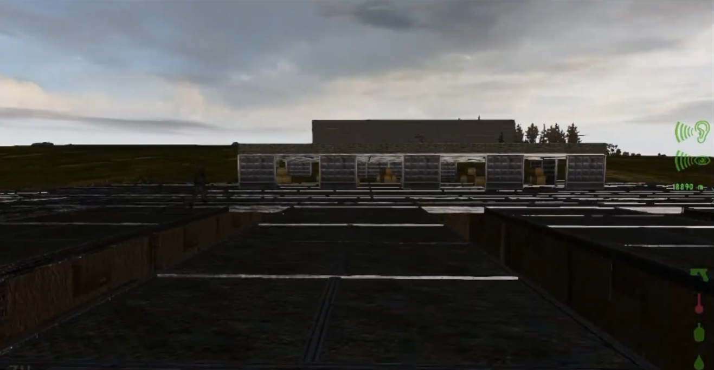
Ein besonderes Community-Event mit eigener Arena.
Die Spieler traten gegeneinander an und nur einer konnte am Ende gewinnen.
▶ Video ansehenARMA 3 · EXILE
Mit ARMA 3 Exile begann ein neues Kapitel der Community.
Neben dem normalen Spielbetrieb entstanden auch eigene Events wie das Team Deathmatch.
Spieler traten in Teams gegeneinander an und konnten sich in einem eigenen Spielmodus messen.
▶ Video ansehenARMA 3 · EXILE
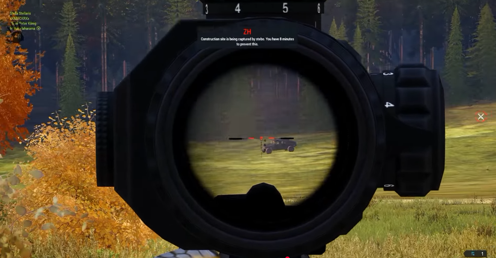
Ab und zu verirrte sich auch der ein oder andere Streamer auf unseren Server.
Einer dieser Besuche war von Moondye7 während der ARMA 3 Exile Zeit.
▶ Video ansehenEin besonderer Community-Moment
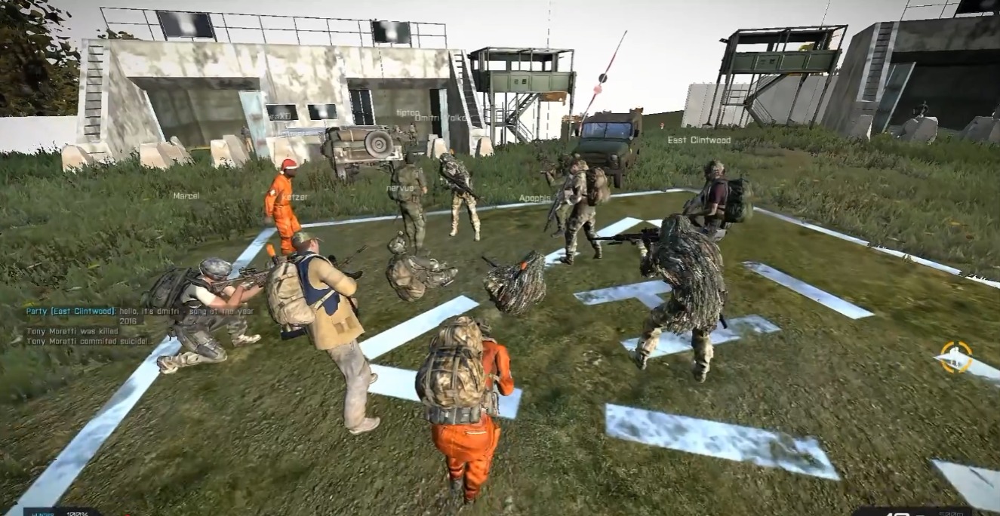
Manchmal entstanden besondere Momente ganz nebenbei.
In der Safezone versammelten sich Spieler, während ein Musiker spontan ein Lied vor der Community spielte.
▶ Video ansehenVerschiedene Karten aus der ARMA 3 Exile Zeit.
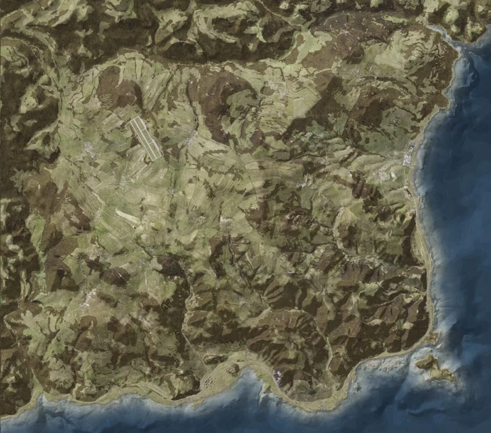
Eine der bekannten Karten aus der Zombiehölle-Zeit.
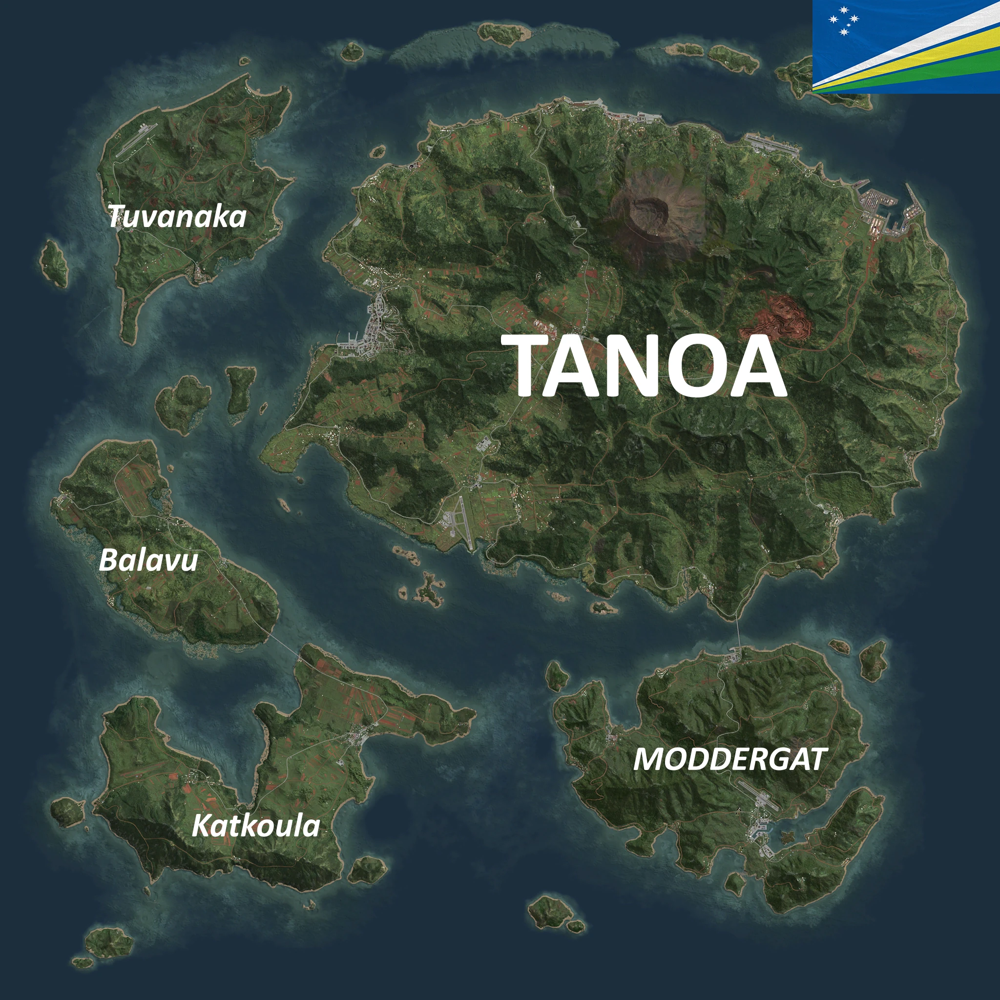
Eine weitere Welt während der ARMA 3 Exile Zeit.
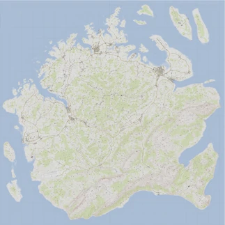
Eine weitere Karte aus der Exile-Zeit.
Der erste ARMA 2 DayZ Server geht auf Chernarus online und füllt sich schnell mit den ersten Stammspielern.
Basenbau wird durch DayZ Epoch zum großen Thema und die Adminbase wird zum zentralen Treffpunkt für Events.
Neue Projekte und Erweiterungen wie ARMA 2 DayZ Epoch bringen frischen Wind und neue Möglichkeiten auf die Server.
Der Umstieg auf die neue Engine. Der Server startet mit der Exile-Mod auf ARMA 3.
Die alten ARMA-Server sind Geschichte, aber das Archiv bleibt online. Nebenbei wird aktiv an dem neuen 2D-Survival-Projekt gearbeitet.
Ob ARMA 2, DayZ, Epoch, ARMA 3 oder Exile – wenn ihr noch alte Screenshots oder besondere Momente habt, könnt ihr sie hier teilen. Nach einer kurzen Prüfung erscheinen sie in der Galerie.
Entdecke frühere Versionen der Webseite und reise zurück in die aktive Zeit der Zombiehölle (ZHServer).
Archiv öffnenEntdecke Videos, Trailer, Missionen und Erinnerungen aus der Geschichte der Zombiehölle (ZHServer).
YouTube öffnenScreenshots/Aufnahmen aus Arma 2, Arma 3, Events und vielen weiteren Momenten der Community, lass uns deine Screenshots gerne zukommen.
Galerie öffnenDu warst Teil der ZHServer Community? Teile deine Erinnerungen, Grüße oder besonderen Momente mit anderen Spielern.
Hinweis: Neue Gästebucheinträge werden vor der Veröffentlichung geprüft und anschließend freigeschaltet.
Der Merchandise-Shop ist kein Geschäftsmodell und ich verdiene daran nichts.
Ich freue mich einfach, wenn ihr die Geschichte weitertragt und ein Stück Zombiehölle bei euch habt.
Die alten Community-Kanäle bleiben offen, falls du vorbeischauen oder in Verbindung bleiben möchtest.